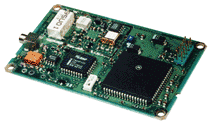
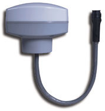

Last update: 21-Oct-2010 23:44 UTC
Address: 127.127.30.u
Reference ID: GPS
Driver ID: ONCORE
Serial Port: /dev/oncore.serial.u; 9600 baud, 8-bits, no parity.
PPS Port: /dev/oncore.pps.u; PPS_CAPTUREASSERT required, PPS_OFFSETASSERT supported.
Configuration File: ntp.oncore, or ntp.oncore.u, or ntp.oncoreu, in /etc/ntp or /etc.
This driver supports most models of the Motorola Oncore GPS receivers (Basic, PVT6, VP, UT, UT+, GT, GT+, SL, M12, M12+T), as long as they support the Motorola Binary Protocol.
The interesting versions of the Oncore are the VP, the UT+, the "Remote" which is a prepackaged UT+, and the M12 Timing. The VP is no longer available new, and the UT, GT, and SL are at end-of-life. The Motorola evaluation kit can be recommended. It interfaces to a PC straightaway, using the serial (DCD) or parallel port for PPS input and packs the receiver in a nice and sturdy box. Less expensive interface kits are available from TAPR and Synergy.
|  |  | |
|
|
|
|
The driver requires a standard PPS interface for the pulse-per-second output from the receiver. The serial data stream alone does not provide precision time stamps (0-50msec variance, according to the manual), whereas the PPS output is precise down to 50 nsec (1 sigma) for the VP/UT models and 25 nsec for the M12 Timing. If you do not have the PPS signal available, then you should probably be using the NMEA driver rather than the Oncore driver. Most of these are available on-line
The driver will use the "position hold" mode with user provided coordinates, the receivers built-in site-survey, or a similar algorithm implemented in this driver to determine the antenna position.
In addition, on platforms supporting Shared Memory, all of the messages received from the Oncore receiver are made available in shared memory for use by other programs. See the Oncore-SHMEM manual page for information on how to use this option. For either debugging or using the SHMEM option, an Oncore Reference Manual for the specific receiver in use will be required.
The driver was initially developed on FreeBSD, and has since been tested on Linux, SunOS and Solaris.
Configuration
There is a driver specific configuration file ntp.oncore (or ntp.oncore.u or ntp.oncoreu if you must distinguish between more than one Oncore receiver) that contains information on the startup mode, the location of the GPS receiver, an offset of the PPS signal from zero, and the cable delay. The offset shifts the PPS signal to avoid interrupt pileups `on' the second, and adjusts the timestamp accordingly. See the driver source for information on this file. The default with no file is: no delay, no offset, and a site survey is done to get the location of the gps receiver.
The following three options can be set in the driver specific configuration file only if the driver is using the PPSAPI. The edge of the PPS signal that is `on-time' can be set with the keywords [ASSERT/CLEAR] and the word HARDPPS will cause the PPS signal to control the kernel PLL.
Performance
Really good. With the VP/UT+, the generated PPS pulse is referenced to UTC(GPS) with better than 50 nsec (1 sigma) accuracy. The limiting factor will be the timebase of the computer and the precision with which you can timestamp the rising flank of the PPS signal. Using FreeBSD, a FPGA based Timecounter/PPS interface, and an ovenized quartz oscillator, that performance has been reproduced. For more details on this aspect: Sub-Microsecond timekeeping under FreeBSD.